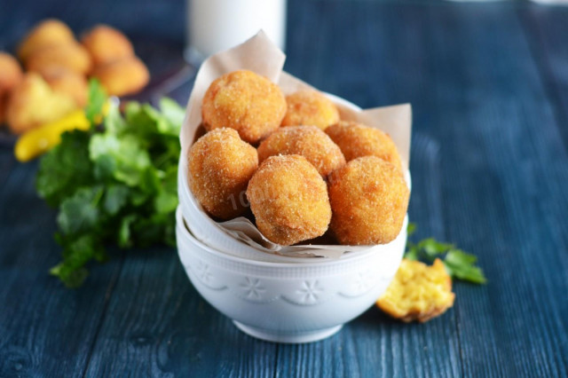

ООО "Русский дар" 
Вернутся в начальный раздел | Вернутся на главную страницу
| Панировка: | |
|---|---|
|
|
Оборудование: нож, миска, холодильник и ложка столовая.

Подготовьте ингредиенты. Учтите, что от выбранного сорта картофеля напрямую зависит длительность приготовления и вкус блюда. Все подробности читайте в статье по ссылке под рецептом.

Картофель вымойте, очистите и нарежьте кубиками.

Выложите картошку в кастрюлю, залейте водой, доведите до кипения и варите в подсоленной воде на среднем огне до готовности.

Затем воду слейте.

Картофель разомните в пюре толкушкой.

Добавьте кусочек сливочного масла и перемешайте.

Массу охладите до комнатной температуры.

В картофельное пюре вбейте яйцо. Добавьте паприку и перец. Если картофель после варки несоленый, досолите.

Массу тщательно перемешайте.

Для панировки понадобится: 75 г панировочных сухарей; 50 г муки; 1 крупное яйцо. И примерно 300 мл растительного масла для обжарки крокетов во фритюре.

Яйцо взбейте до однородности.

Из картофельного пюре скатайте небольшие шарики размером с грецкий орех. Каждый шарик сначала обваляйте в муке.

Затем окуните во взбитое яйцо и запанируйте в сухарях. Панировать в сухарях нужно очень тщательно, чтобы не оставалось ни одного свободного участка.

В сотейнике разогрейте до кипения растительное масло. Кстати для фритюра лучше использовать не очень широкие, но глубокие емкости. Ведь крокеты должны прямо плавать в масле и равномерно обжариваться со всех сторон. О том, как выбрать идеальное масло для жарки, читайте по ссылке ниже.

Опустите в кипящее масло несколько крокетов и жарьте во фритюре до золотистой корочки. Вначале картофельные шарики опустятся на дно, но по мере готовности они всплывут на поверхность.

Готовые крокеты шумовкой переложите на салфетку, чтобы стек лишний жир.

Подавайте крокеты лучше горячими. Приятного аппетита!

Шаг 1, Шаг 2, Шаг 3, Шаг 4, Шаг 5, Шаг 6, Шаг 7, Шаг 8, Шаг 9, Шаг 10, Шаг 11, Шаг 12,Шаг 13, Шаг 14, Шаг 15, Шаг 16, Шаг 17.